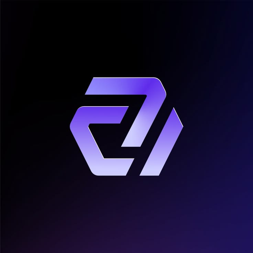

✦
Readable by default
let, fn, if, for, async. N+ chooses words that make code feel like a language, not a puzzle.

N+A modern, clean and expressive programming language for web apps, APIs, bots, automation, AI tools and beyond.
let name = "N+"*
print("Hello {name}")!
fn greet(name) {
print("Welcome, {name}!")*
}
greet("developer")!THE LANGUAGE
N+ keeps the core readable for beginners while leaving room for serious tooling, networking and high-performance compilation.
let, fn, if, for, async. N+ chooses words that make code feel like a language, not a puzzle.
The long-term compiler pipeline targets native and WebAssembly output with a dedicated intermediate representation.
Web, APIs, Discord, Minecraft tooling, data, AI and CLI apps can share the same language and project workflow.
FEELS LIKE N+
Statement termination stays distinctive: * is the preferred formatter style, while ! is supported for expressive code.
Explore the starter project →import web*
let app = web.app()*
app.get("/", fn(req) {
return "Hello from N+!"*
})*
app.listen(3000)*ECOSYSTEM
HTTP, JSON, WebSockets and server applications.
Build bots with clean commands and events.
RCON, server tools and future plugin SDKs.
Explain, fix, generate, test and refactor from the editor.
SQLite first, with drivers for larger production stacks.
One command line for projects, packages, tests and builds.
N+ WEB
Build a dev server with routes using the same language you use for the rest of your project.
web.listen(3000)* web.get("/", "<h1>Hello from N+ Web</h1>")* web.start()!
ROADMAP
Lexer, parser, AST, interpreter, variables, functions, conditions and friendly diagnostics.
Formatter, package manager, language server, debugger and full VS Code support.
Web, databases, Discord, Minecraft and AI packages become first-class ecosystem pieces.
NIR optimization, native compilation, cross-platform builds and WebAssembly.
READY TO BUILD?